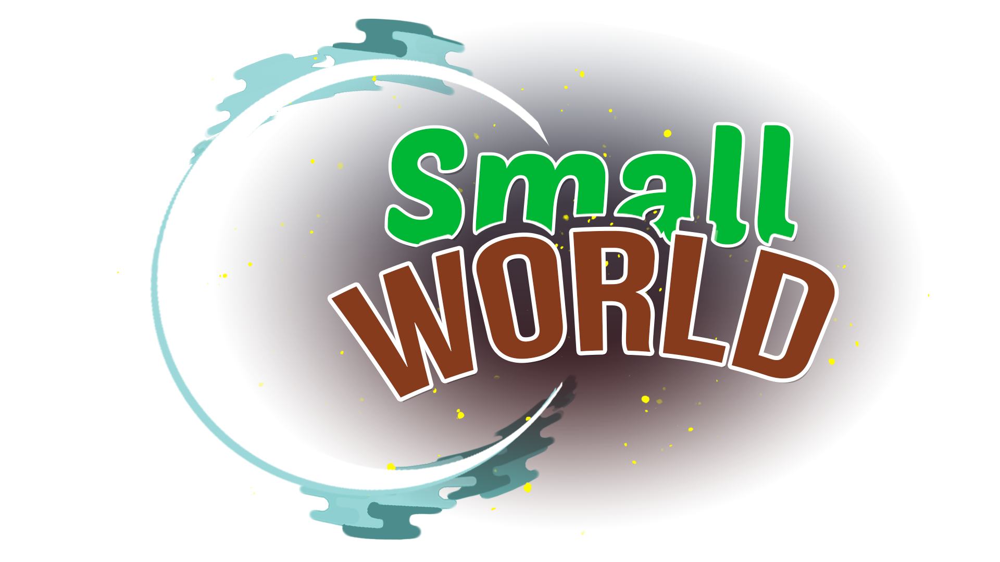

Launching a indie VR game in 3 days
I participated in the annual VR Jam, hosted by popular YouTube VR developers where I joined a team consisting of a 3D designer, a music
composer, and four programmers. My contributions was to produce 3D designs and UX/UI strategy. Fueled with
coffee, we built a functional VR game under the theme, "small world," in 3 days.
Project: VR game
Team: 7 talented specialists 🥰
Timeline: 3 days | July, 2021 - August, 2021
Role: UX/UI, 3D, Strategy
Tech: Unity, Blender, Figma, Photoshop, Oculus Quest 2
Team
Ryan Rosales: 3D and UX/UI Designer
Karthik Rajesh: 3D Designer and Animator
James Wooten: Music Composer
Nic Farmer: Unity Programmer
"Ninjafella": Unity Programmer
Julius Won: Unity Programmer
Jonathan McAfee: Unity Programmer
The theme and story
On the first day of the event, the theme, "small world," was announced and the team created a fun idea
of having the Earth shrunk by aliens and the player must transport the planet to a safe haven, while protecting
it from alien spacecraft.

Learning from this experience
This three day event was an amazing opportunity and I'm grateful to be able to work with a team
of very talented people.
Key learnings
• I was able to experience working in a AR/VR and game development environment.
• Game and AR/VR design and development is complex and requires diverse sets of skills and a passion
for these niche technologies.
• Even though most of the team are strangers, I believe our successful collaboration resulted from each person being confident
in their own skillsets, as well as trusting each other to get the job done.
• For future collaborations, I need to advocate for UX and work within the game engine and work closely with developers to make sure
the experience flows smoothly.
Next steps
We are looking for feedback on our game as we plan to continue squashing more bugs and polishing the
experience.